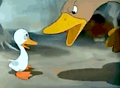
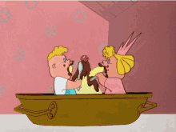
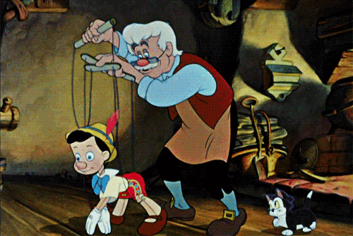
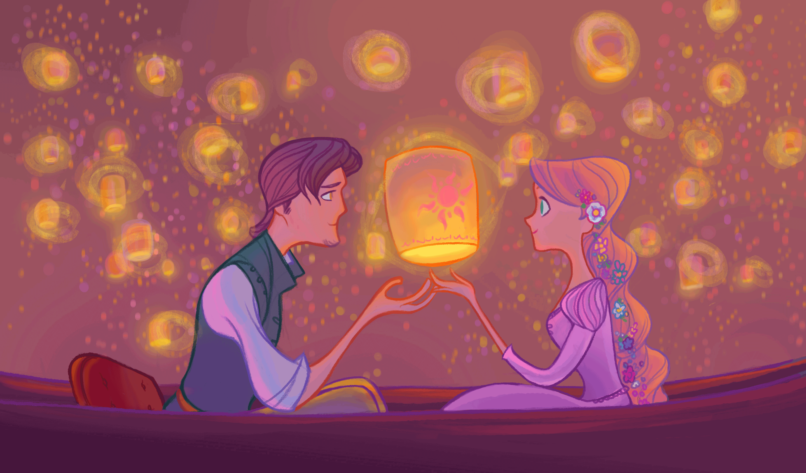
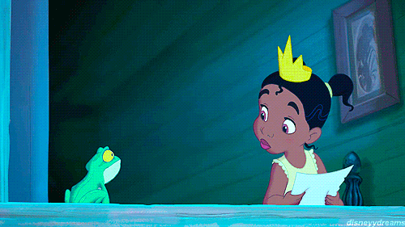
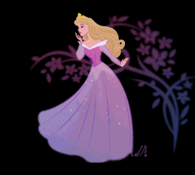
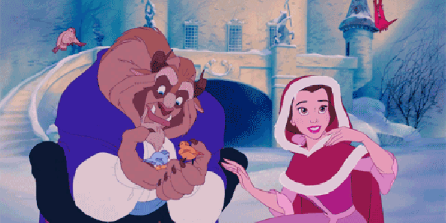

Cinderela era filha de um comerciante rico. Depois que seu pai morreu, sua madrasta tomou conta da casa que era de Cinderela. Cinderela então, passou a viver com sua madrasta malvada, junto de suas duas filhas que tinham inveja da beleza de Cinderela e transformaram-na em uma serviçal.
Ela tinha de fazer todos os serviços domésticos e ainda era alvo de deboches e malvadezas. Seu refúgio era o quarto no sótão da sua própria casa e seus únicos amigos: os animais da floresta.
Um belo dia, é anunciado que o Rei realizará um baile para que o príncipe escolha sua esposa dentre todas as moças do reino. No convite, distribuído a todos os cidadãos, havia o aviso de que todas as moças deveriam comparecer ao Baile promovido pelo Rei.
A madrasta de Cinderela sabia que ela era a mais bonita da região, então disse que ela não poderia ir porque não tinha um vestido apropriado para a ocasião. Cinderela, então, costurou um vestido com a ajuda de seus amigos da floresta. Passarinhos, ratinhos e esquilos a ajudaram a fazer um vestido de retalhos, mas muito bonito.
Porém, a madrasta não queria que Cinderela comparecesse ao baile de forma alguma, pois sua beleza impediria que o príncipe se interessasse por suas duas filhas. Sendo assim, ela e as filhas rasgaram o vestido, dizendo que não tinham autorizado Cinderela a usar os retalhos que estavam no lixo. Fizeram isso de última hora, para impedir que a moça tivesse tempo para costurar outro.
Muito triste, Cinderela foi para seu quarto no sótão e ficou à janela, olhando para o Castelo na colina. Chorou, chorou e rezou muito. De suas orações e lágrimas, surgiu sua Fada-madrinha que confortou a moça e usou de sua mágica para criar um lindo vestido para Cinderela.
Também surgiu uma linda carruagem e os amiguinhos da floresta foram transformados em humanos, cocheiro e ajudantes de Cinderela. Antes de sua afilhada sair, a Fada-madrinha lhe deu um aviso: a moça deveria chegar antes da meia-noite, ou toda a mágica iria se desfazer aos olhos de todos.
Cinderela chegou à festa como uma princesa. Estava tão bonita, que não foi reconhecida a não ser pela madrasta,que passou a noite inteira dizendo para as filhas que achava conhecer a moça de algum lugar, mas não conseguia dizer de onde. O príncipe, tão-logo a viu a convidou para dançar. Cinderela e o príncipe dançaram e dançaram a noite inteira. Conversaram e riram como duas almas gêmeas e logo se perceberam feitos um para o outro.
Acontece que a fada-madrinha tinha avisado que toda a magia só duraria até à meia-noite e um. Quando o relógio badalou as doze batidas e um minuto, Cinderela teve de sair correndo. Foi quando deixou um dos seus sapatinhos de cristal na escadaria.
O príncipe, muito preocupado por não saber o nome da moça ou como reencontrá-la, pegou o pequeno sapatinho e saiu em sua busca no reino e em outras cidades. Muitas moças disseram ser a dona do sapatinho, mas o pé de nenhuma delas se encaixava no objeto.
Quando o príncipe bateu à porta da casa de Cinderela, a madrasta trancou a moça no sótão e deixou apenas que suas duas filhas experimentassem o sapatinho. Apesar das feiosas se esforçarem, nada do sapatinho de cristal servir. Foi quando um ajudante do príncipe viu que havia uma moça na janela do sótão da casa.
Sob as ordens do príncipe, a madrasta teve de deixar Cinderela descer. A moça então experimentou o sapatinho, mas antes mesmo que ele servisse em seus pés, o príncipe já tinha dentro do seu coração a certeza de que havia reencontrado o amor de sua vida.
Cinderela e o príncipe se casaram em uma linda cerimônia, e anos depois se tornariam Rei e Rainha, famosos pelo bom coração e pelo enorme senso de justiça. Cinderela e o príncipe foram felizes para todo o sempre.
Reflexão da Historia
O conto da Cinderela nos revela uma narrativa sobre a superação e o crescimento.
A moça, que é rejeitada pela família, sente-se sozinha e desamparada, mas através de sua busca interior e criatividade consegue criar um mundo novo para si, tornando-se uma personalidade única, e não superficial como suas irmãs.
O sapato que Cinderela deixa cair ao sair do baile simboliza a liberdade de poder caminhar com segurança e é por meio dele que a jovem consegue se encontrar com o príncipe.
É interessante observar que, segundo a psicologia, os contos de fadas são analogias de processos emocionais a que todo ser humano está sujeito. Assim como nos sonhos, cada elemento dessas narrativas representa uma parte da parte da psiquê.
patinho feio

Era uma manhã de verão, e uma pata havia botado cinco ovos. Ela estava aguardando impaciente a chegada de seus filhotinhos.Assim, quando o primeiro ovo se partiu, mamãe pata ficou muito contente. Logo os outros patinhos também começaram a nascer. Mas havia um ovo que demorou para se quebrar, deixando-a ansiosa.
Passado algum tempo, o último filhote finalmente conseguiu sair do ovo. Mas quando mamãe pata o viu, ela não ficou muito satisfeita e exclamou:
- Esse patinho é muito diferente, muito feio. Não pode ser meu filho!
- Ah! Alguém te pregou uma peça. Disse a galinha que morava ali por perto.
O tempo foi passando e o patinho feio foi ficando cada vez mais feio, cada vez mais diferente de seus irmãos e cada vez mais isolado. Os outros animais zombavam dele, o que o deixava entristecido e angustiado.
Então, quando o inverno chegou, o patinho resolveu partir.
Ele andou bastante e encontrou uma casa, assim, resolveu entrar pensando que lá talvez alguém gostasse dele. Foi o que aconteceu. Havia um homem que o acolheu, assim, o patinho passou esse tempo muito bem.
Mas, esse homem tinha também um gato, que um dia levou o pato para fora de casa, deixando-o sozinho e triste novamente.
O patinho saiu caminhando e depois de muito andar encontrou um lugar muito bonito, com um lago. O pato viu um cantinho aconchegante e foi até lá descansar. Nesse momento, algumas crianças que estavam por perto, perceberam a chegada de uma nova figura. Elas ficaram encantadas e disseram:
- Vejam, temos um visitante!
- Nossa! E como é lindo!
O patinho não entendeu de quem as crianças estavam falando, mas quando ele se aproximou do lago e viu seu reflexo na água, avistou um maravilhoso cisne. Então, ao olhar para o lado, ele se deu conta de que outros cisnes também moravam ali.
Dessa forma, o patinho descobriu que na verdade, ele era um cisne.
Desde então, ele passou a viver entre seus iguais e não ficou mais angustiado.
Reflexão da Historia
A história nos fala sobre aceitação e pertencimento. O patinho, depois de ser muito humilhado e experimentar sentimentos de angústia, desamparo e baixa auto estima, consegue se dar conta de seu valor. Isso porque ele descobre que, na verdade, estava inserido em um ambiente que não era o seu por natureza, pois ele era um cisne.
Em alguma medida, a narrativa conta sobre emoções presentes no universo infantil. Muitas vezes, as crianças sentem-se deslocadas entre os amigos e mesmo na própria família. Tais emoções, se não tratadas, podem ser levadas para a vida adulta também.
Então, a história do patinho feio nos mostra uma busca interior em direção a um resgate e descoberta de nossa potência como seres humanos, assumindo toda a nossa "beleza" e auto-amor escondidos.
É um conto que explora também a questão do "diferente". Pois, o patinho não era nem um pouco parecido com seus irmão, não se adequando e vivendo sempre isolado. Mas, à medida que sai em busca de sua totalidade, ele se depara com sua força na diferença, afinal, todos nós somos diversos uns dos outros.
Vale lembrar que o pato é um animal "híbrido", que vive tanto na água quanto na terra, simbolizando assim o diálogo entre o mundo do consciente e do inconsciente.
João e Maria

Era uma vez duas crianças, João e Maria, que viviam com seu pai e a madrasta em uma casa perto da floresta. A família era bastante humilde e as coisas estavam cada vez mais difíceis para eles, que estavam sem recursos e entrando na miséria.
Certo dia, a madrasta, que era má, tem a ideia de abandonar as crianças no meio da floresta, pois assim seriam duas bocas a menos para alimentar. A mulher consegue convencer seu marido e, na manhã seguinte, todos partem para cortar lenha.
Assim, o pai da crianças acende uma fogueira na mata e os deixa lá, dizendo que voltaria logo, o que não acontece.
João, que tinha escutado o plano perverso, havia se preparado e levado consigo pedrinhas brilhantes que tinha encontrado na casa.
Durante o caminho, o menino foi deixando pelo chão as pedrinhas, dessa forma, ele e a irmã poderiam retornar à casa seguindo essas pedras.
João e Maria conseguiram dessa maneira voltar para casa, o que deixou o pai muito feliz.
Entretanto, a madrasta ficou possessa e convenceu novamente o marido a abandonar seus filhos em um lugar ainda mais longe.
Dessa vez, a mulher trancou a porta do quarto das crianças, não permitindo que João pegasse as pedrinhas brilhantes.
Assim fizeram, entretanto, as migalhas foram devoradas pelos pássaros e, quando os dois precisaram, elas já não estavam mais lá.
Tristes, cansados e com fome, os dois saem a vagar pela mata.
Até que se deparam com uma casa fantástica feita de doces e bolo. Claro que os irmãos não resistem e se aproximam para comer todas aquelas guloseimas.
Depois de saciados, João e Maria descansavam por ali, quando uma velha senhora sai de dentro da casa. Ela os convida para entrar e diz que estava esperando por eles.
A velha, que na verdade era uma bruxa, oferece muita comida para eles, que ficam em sua casa por vários dias.
Então, a bruxa resolve prender João em uma gaiola e alimentá-lo até ele ficar bem gordo para ser assado no forno.
João conseguiu enganar a bruxa, que achava que ele não estava gordo o suficiente, mas mesmo assim, um dia ela resolve assá-lo de qualquer forma.
A bruxa então manda Maria acender o forno e quando a velha má chega perto do forno, Maria a empurra para dentro e fecha rapidamente a tampa.
A menina consegue libertar o irmão, e os dois saem de lá correndo, não sem antes pegar riquezas que estavam na casa da velha.
Então as crianças perambulam pela floresta mais alguns dias e conseguem voltar pra casa. Dessa vez, o pai as recebe e não deixa mais a madrasta fazer maldades.
Reflexão da historia
Em João e Maria, temos uma narrativa que nos fala sobre a consciência de que nem todos os momentos da vida são de felicidade e sobre a busca pela independência dos pais.
As crianças representam o lado masculino e feminino em cada um de nós, que, diante do desamparo, adentra o desconhecido (a floresta, no caso) e se perde, sem saber como voltar para casa, mesmo deixando "pistas" no meio do caminho.
Assim, nessa procura, eles encontram algo maravilhoso, a satisfação total, uma casa feita de guloseimas! Eles então, a princípio, se iludem pensando que estariam em um ambiente incrível e que a vida seria uma grande festa.
Mas a lição é que tudo tem seu preço, e por conta de seus excessos, se deparam logo com uma bruxa má, que pode ser o símbolo das frustrações e mesmo das consequências causadas pela impulsividade.
A bruxa os faz prisioneiros e as crianças precisam dessa forma acessar suas forças internas, criatividade e coragem para se livrarem do apuro.
João e Maria conseguem sair vitoriosos, e ainda carregar as riquezas da bruxa má, que podem sinalizar que eles levam consigo os ricos aprendizados de tal situação.
Pinóquio

Era uma vez um carpinteiro que se chamava Gepeto. O homem era muito solitário e passava os dias fazendo coisas de madeira. O sonho de Gepeto era ter um filho com quem pudesse compartilhar a vida.
Um dia, ele resolveu fazer um menino de madeira em formato de marionete e, ao terminar, disse:
- Que belo boneco de madeira. Seria incrível se ele fosse um menino real!
Para sua surpresa, o boneco tomou vida e começou a andar e falar. O homem ficou maravilhado e lhe deu o nome de "Pinóquio".
Passados alguns dias, Gepeto envia Pinóquio para a escola e lhe dá a instrução de voltar para a casa assim que a aula terminar. Entretanto, no meio do caminho, Pinóquio avista um teatro de marionetes que acontecia na praça.
Ele então resolve participar do teatro, e todos ficam encantados com sua destreza.
Assim, o boneco recebe 5 moedas de ouro e se alegra pensando que seu pai ficaria satisfeito.
Pinóquio vai em direção à escola, mas quando estava quase chegando, se depara com dois homens mal intencionados que o convencem a ir com eles até um local e enterrar as moedas de ouro.
Eles dizem:
- Enterre as moedas aqui nesse terreno e nascerá uma árvore de dinheiro. Seu pai ficará rico e nunca mais precisará trabalhar!
Pinóquio enterra as moedas e fica esperando a árvore nascer. Ele logo adormece, e nesse momento os homens pegam as moedas enterradas e fogem.
O boneco despertou de seu sono profundo e se deu conta que o dinheiro havia sumido. Triste e preocupado, Pinóquio pensa que seu pai ficaria muito bravo e decide não voltar para casa.
Enquanto caminhava, confuso, Pinóquio encontra uma linda jovem de vestido azul.
Ele pede ajuda, e a moça, que era na verdade uma fada, lhe diz que ajudaria. Ela pergunta ao boneco onde ele morava, ao que Pinóquio responde que era sozinho e não tinha casa.
A fada então repara que o nariz de graveto do menino começa a crescer e se dá conta de que ele havia contado uma mentira.
Ela recomenda que ele volte para sua casa e se comporte junto ao seu pai. O boneco promete que faria isso e seu nariz volta ao normal.
Na volta para casa, Pinóquio passa por um parque de diversões e não resiste, ele entra no parque. Imediatamente seu nariz começa a crescer novamente.
Lá, o boneco encontra pessoas que dizem que ele poderia comer todos os sorvetes que gostaria.
Pinóquio então toma vários sorvetes, sem saber que se transformaria em um burro.
Dessa forma, as pessoas o vendem para um circo, onde Pinóquio trabalha exaustivamente e é mal tratado. Então, quando ele, na forma de burro, já não servia mais para o trabalho, os donos do circo o atiram ao mar.
Assim que cai no mar, o burrinho transforma-se de novo em menino de madeira e é engolido por um baleia faminta. Dentro da barriga da baleia, Pinóquio encontra-se com seu pai, Gepeto, que também fora engolido quando estava a sua procura.
Os dois se abraçaram contentes, mas estavam muito fracos.
Nessa hora, um peixe que também estava lá oferece ajuda e os tira de dentro da baleia.
Assim, Gepeto e Pinóquio conseguem voltar para casa. Depois de tantos apuros, Pinóquio promete ao pai ser um bom menino e não mentir mais.
A fada azul então aparece e converte Pinóquio em um menino real, de carne e osso, para a alegria de todos!
Reflexão da historia
Na história, o que está colocado é a perda da ingenuidade e a construção de uma personalidade sólida. Tanto que, o boneco de madeira é feito como uma marionete, o que significa que ele é facilmente manipulável.
Impossibilitado de atuar no mundo por si mesmo, Pinóquio entras nas maiores enrascadas ao fazer apenas o que outras pessoas sugerem.
O boneco também se esquiva de suas responsabilidades a todo tempo, desviando-se do caminho da escola e dos seus afazeres. Essa é uma maneira de demonstrar o apego à infância e falta de maturidade.
Outro ensinamento importante é sobre a falsidade, exibida no conto através do nariz do menino, que aumenta de tamanho a cada mentira contada. Assim, fica explícito que não se deve mentir, pois a verdade sempre aparecerá, de uma forma ou de outra.
Por fim, o boneco, depois de ser enganado por diversas vezes, reencontra seu pai e assume as responsabilidades, adquirindo também a esperteza necessária para não ser mais manipulado. Assim, ele é transformado finalmente em um menino real.
Branca de Neve
Era uma vez Branca de Neve, uma princesinha muito bonita que morava com seu pai. Sua mãe havia morrido e o rei se casou novamente com uma bela moça.
Entretanto, a nova esposa do rei era também muito vaidosa e má.Ela possuía um espelho mágico e todas as manhãs perguntava para ele: “Espelho, espelho meu, existe uma mulher mais bela do que eu?”
E o espelho sempre respondia que ela era a mais bela de todas.
Enquanto isso, Branca de Neve crescia e se tornava cada dia mais formosa, com a pele alva como a neve, os cabelos negros como a noite e a boca vermelha como o sangue.
Assim, um dia, ao perguntar para o espelho, a madrasta recebeu como resposta: “Minha rainha, a senhora é realmente muito bela, mas agora Branca de Neve é a mais bonita de todas.”
Furiosa, a madrasta mandou um de seus servos sequestrar Branca de Neve e matá-la na floresta, trazendo o seu coração como prova de sua morte. O servo, com pena da jovem, ordenou que ela fugisse e levou o coração de um veado que passava no local.
Branca de Neve então passou a viver na floresta e fez amizade com os animais. Um dia, ao caminhar, se deparou com uma casinha muito simpática. Ela entrou na casa e viu sete camas pequenas. Cansada, a jovem adormeceu em uma das caminhas.
A casa era o lar de sete anões que, durante o dia, trabalhavam em uma mina. Ao voltarem para casa encontraram Branca dormindo e ficaram muito felizes.
A jovem despertou e contou sua triste história. Os anões prometeram ajudá-la e ela ficou morando com eles e fazendo as tarefas de casa.
Um dia, a madrasta ao perguntar para o espelho sobre sua beleza, descobriu que a enteada ainda estava viva. Ela então, decide se disfarçar de velha camponesa e vai até a floresta para oferecer uma maça envenenada para Branca de Neve.
A moça dá a primeira mordida e logo cai desfalecida, ao ver que tinha conseguido o que queria, a madrasta má foge.
Os anões, ao retornarem para casa avistam a bela Branca caída no chão e ficam muito tristes. Eles então a colocam em uma caixa de vidro no meio da floresta para poderem sempre admirar sua beleza.
Passado um tempo, surge um príncipe com seu cavalo branco. Ao ver a linda moça adormecida, o jovem não se contém e lhe dá um beijo.
Nesse momento, Branca de Neve desperta do encanto e se apaixona pelo príncipe. Os dois se casam e vivem felizes para sempre..
Reflexão da historia
Aqui, os valores que estão postos dizem respeito ao desenvolvimento psicológico e o despertar para uma nova vida, saindo infância/adolescência para a fase adulta.
Branca de Neve é uma menina que tem uma madrasta muito ruim e invejosa, mas talvez essa seja apenas a visão que a criança tem da mãe em determinado momento da vida.
Assim, ao ir para a floresta é como se a garota estivesse fugindo do mundo que conhece e adentrando seu próprio inconsciente, cheio de perigos. Entretanto, ao encontrar os sete anões, Branca de Neve encontra simbolicamente ferramentas que a ajudam a lapidar sua personalidade.
A maçã, segundo a filosofia, representa o coração (o mesmo que o caçador ficou de levar para a madrasta como prova da morte da jovem). Pode simbolizar ainda a passagem da infância para a maturidade sexual (erotismo), assim como na passagem bíblica em que Eva come o fruto proibido.
Ao cair em sono profundo, Branca está simbolicamente absorvendo todo o conhecimento que adquiriu até o momento, sendo despertada novamente quando integra-se com o lado masculino de sua psique, no caso o príncipe.
Rapunzel

Era uma vez um casal que estava esperando a chegada de sua primeira filha. Eles tinham como vizinha uma feiticeira muito má.
No quintal da feiticeira havia uma horta cheia de hortaliças bem verdinhas e bonitas que despertaram o desejo da grávida de comê-las.
Assim, a mulher pede ao seu marido que busque algumas verduras para ela fazer uma deliciosa salada.
Exitante, o marido vai até à horta e colhe um pé de alface. Quando estava saindo do quintal, a bruxa aparece e fica furiosa. O homem então explica a situação e diz que sua mulher está grávida, ao que a bruxa responde, satisfeita:
— Então ela está esperando um bebê?! Você pode levar todas as verduras da minha horta, mas quando a criança nascer eu irei buscá-la!
Sentindo-se sem saída, o homem concorda e vai para casa levando as hortaliças. Passado um tempo, a linda menina nasceu e logo a feiticeira apareceu para levá-la, batizando-a de Rapunzel.
Rapunzel viveu na casa da bruxa até os doze anos, quando a malvada decide prendê-la em uma enorme torre sem portas no meio da floresta.
A menina tinha os cabelos dourados e muito longos, pois nunca os tinha cortado. Assim, a bruxa para subir à torre pedia que Rapunzel jogasse suas tranças, que serviam como uma grande corda.
O tempo passava e Rapunzel se acostumou a viver muito triste e sozinha, tendo apenas a visita da bruxa. Para aplacar sua solidão, passou a cantar na janela da torre.
Um dia, um jovem príncipe que caminhava pela floresta escutou o doce canto de Rapunzel e, encantado, resolveu seguir o som, avistando então a torre.
Ele se escondeu e viu que a bruxa pedia à moça que jogasse os cabelos para que ela subisse. Assim, no dia seguinte, o príncipe foi até o local e fez o mesmo pedido:
— Rapunzel, jogue suas tranças!
A moça, pensando que fosse a feiticeira, jogou os cabelos. Mas para sua surpresa, quem subiu foi o belo príncipe.
Ela ficou assustada, pois nunca havia conhecido um homem, mas ele a tranquilizou. Assim, passou a visitá-la sempre ao entardecer.
Eis que um dia, a bruxa vê o príncipe subindo na torre e decide se vingar. Na manhã seguinte, a malvada vai até Rapunzel, corta seus cabelos e a abandona na floresta.
Mais tarde, o príncipe chega e pede para Rapunzel jogar as tranças. A bruxa então, joga os cabelos da menina, que a essa altura já estava perambulando pela mata fechada.
O príncipe sobe e se depara com a malvada, que o atira pela janela. Ele cai em cima de uma planta cheia de espinhos, que amortece a queda e o deixa viver, entretanto, os espinhos furam seus olhos, deixando-o cego.
Ele então passa a vagar sem visão pela floresta e um belo dia ouve um canto conhecido, era Rapunzel. O príncipe segue o som e encontra-se com a amada, que com lágrimas nos olhos o abraça. As lágrimas da jovem caem sobre os olhos dele, devolvendo a visão ao jovem.
Os dois sentem uma alegria imensa e se casam, vivendo felizes para sempre.
Reflexão da historia
Em Rapunzel, a mãe da menina representa um desejo incontrolável pelas coisas materiais, que surge e não mede consequências, sacrificando até mesmo a filha, ou seja, seu potencial criativo.
Assim, a garota é entregue a uma bruxa que a aprisiona no alto de uma torre, isolada do mundo externo.
A torre é o símbolo da ignorância. A visão de mundo que Rapunzel adquire provém apenas do olhar da bruxa, que representa sentimentos de posse, dominação e mesquinhez.
Mas a menina sabe no seu íntimo que a vida é mais do que se apresenta a ela, e através do canto (ou seja, da arte), ela busca por outros elementos psíquicos. Assim, consegue se encontrar com a parte masculina em seu ser (o príncipe).
Mas nada é tão simples e é preciso que a bruxa corte seus cabelos, que podem ser uma analogia de "cordão umbilical", para que a menina consiga sair da torre e entrar em sua floresta interior (seu inconsciente).
Ela passa por provações até encontrar novamente o príncipe e, com suas lágrimas restaura sua visão perdida, ou seja, seu poder de enxergar um mundo mais potente e criativo.
A princesa e o sapo

Era uma vez uma princesa que vivia em um reino muito distante. Ela passava as tardes brincando com sua bola de ouro nos jardins do castelo.
Um dia a bola caiu dentro do lago e a princesa ficou muito triste. Nessa hora, surgiu um sapo que lhe perguntou o porquê de tamanha tristeza. Sabendo do ocorrido, o sapo então prometeu resgatar a bola da jovem, mas havia uma condição: que ela lhe desse um beijo.
A princesa concordou, pois queria muito a bola. Entretanto, assim que teve o objeto em suas mãos, ela correu para o castelo sem ao menos agradecer.
O sapo ficou muito frustrado e gritou:
— Mas princesa, você me prometeu!
A partir daí, o sapinho passou a acompanhar a princesa em todos os lugares, exigindo sua recompensa.
Um dia, cansado, o sapo foi até o rei e disse:
— A princesa me prometeu um beijo, pois resgatei sua bola de ouro. Mas ela não quer cumprir sua promessa.
O rei chamou a filha e lhe disse que uma promessa real deve sempre ser cumprida. Assim, a princesa tomou coragem e, finalmente, beijou o sapo.
Para sua surpresa, o sapo asqueroso se transformou em um lindo príncipe e os dois se apaixonaram, vivendo felizes para sempre.
Reflexão da historia
Esse conto nos apresenta uma situação de passagem da vida infantil para a maturidade, assim como em Branca de Neve.
Aqui, a personagem principal perde um objeto valioso (a bola de ouro), que representa sua infância, sua inocência e privilégios. Assim, é preciso que ela encare seu lado mais sombrio e "asqueroso" como ser humano, que surge na figura do sapo.
A princípio, a princesa não quer enxergar suas falhas, não quer entrar em contato com seus defeitos, pois assim terá que se responsabilizar por suas atitudes.
Seu compromisso com uma "mudança interior" é quebrado.
Entretanto, sabendo que era necessário crescer para conseguir se relacionar com o mundo externo mais plenamente, a princesa se acostuma com a presença do sapo, ou seja, ganha intimidade com sua própria natureza psíquica em desenvolvimento.
Enfim, ela faz as pazes consigo, alcançando sabedoria e integrando as partes em conflito de seu ser. Esse momento é representado pelo beijo e pela transformação do sapo em príncipe.
A bela adormecida

Era uma vez um rei e uma rainha que estavam ansiosos esperando um bebê. Quando a criança nasceu, uma menina, deram o nome de Aurora.
Para a festa de batizado, o casal convidou três fadas para abençoá-la, mas se esqueceram de convidar a quarta fada, chamada Malévola.
Durante o batizado, todos estavam contentes e duas fadas já haviam feito os votos, desejando felicidades e harmonia à pequena Aurora.
Eis que surge a quarta fada. Ela estava furiosa porque não foi convidada e, como vingança, lança uma maldição:
— Quando completar 15 anos, Aurora encontrará uma roca de fiar e irá furar o dedo. Assim, ela morrerá.
Todos ficaram muito preocupados e a uma das fadas que ainda não tinha feito seus votos disse:
— Não posso desfazer esse feitiço, mas posso alterá-lo. Aurora irá furar o dedo, mas não morrerá, e sim cairá em sono profundo por cem anos, até que um príncipe a acorde com um beijo.
Os pais da criança, aflitos, mandaram destruir todas as rocas do reino e assim, os anos se passaram com tranquilidade.
Mas no dia de seu aniversário de 15 anos, Aurora, tomada por uma grande curiosidade, sai pela floresta e encontra uma casa abandonada. A menina adentra o local e encontra uma velha senhora fiando linho em uma roca.
Ela fica encantada com o objeto e pede para fiar também. Num descuido, Aurora pica o dedo e cai adormecida. A velha, que na verdade era Malévola, vai embora satisfeita.
Pouco tempo depois, uma das fadas boas encontra a jovem caída e a leva para o castelo. Aurora é colocada em sua cama e a fada faz com que todos os presentes no castelo adormeçam também.
Os anos se passam e a floresta ao redor cresce e encobre o castelo. Assim, a história da bela adormecida se transforma em uma lenda.
Muitos rapazes tentam chegar ao local, mas são engolidos pela densa mata. Entretanto, passados cem anos, um jovem e belo príncipe decide se aventurar na empreitada.
Ele consegue ultrapassar todos os desafios e chega ao castelo e aos aposentos da princesa, que dorme seu sono tranquilo.
Aurora continuava linda e o príncipe logo se apaixonou. Não resistindo, ele a beija e a desperta. Nesse momento, o castelo inteiro acorda e a vida volta ao normal.
O rei e a rainha ficam radiantes de felicidade. Aurora e o príncipe então se casam e são felizes para sempre.
Reflexão da historia
Simbolicamente, podemos dizer que nos contos em que a personagem adormece, ela está se preparando para despertar para um novo mundo psicológico, mais integrado consigo mesma.
Assim, no conto A bela Adormecida, a princesa Aurora é desde o nascimento predestinada a adormecer. Isso ocorre quando ela tem 15 anos, idade significativa que marca o início da puberdade.
Mesmo com seus pais tomando os cuidados para "protegê-la" e mandando queimar todas as rocas do reino, Aurora encontra uma maneira de se desvincilhar deles e entrar em contato com uma nova realidade, sua sexualidade aflorada.
Ao adormecer, a menina está trabalhando conteúdos emocionais, e esse pode ser um processo longo como um século.
Ao se sentir pronta, Aurora pode finalmente encontrar-se com seu príncipe, se curando psicologicamente e ter uma vida mais plena.
Assim, podemos dizer que o príncipe, nesse caso, é uma representação do lado masculino de Bela Adormecida e que, quando ela a beija, é como se ela finalmente conseguisse harmonizar lados opostos de sua alma.
Chapeuzinho Vermelho
Era uma vez uma menina muito esperta que morava com sua mãe próximo a uma floresta. Ela sempre usava uma capa com um capuz vermelho, presente de sua querida avó. Por conta disso, passou a ser chamada de Chapeuzinho Vermelho.
A avózinha morava dentro da floresta e um dia, a mãe de Chapeuzinho lhe disse:
— Minha filha, pegue essa cesta de doces e leve para a vovozinha. Tome muito cuidado, não saia do caminho nem converse com estranhos.
A menina então pegou a cesta e saiu pela floresta cantarolando. Eis que surge um lobo que lhe pergunta aonde a garota está indo.
Chapeuzinho, muito inocente, conversa com o lobo e conta que está a caminho da casa de sua avó, que está doente e fraca. A menina também lhe explica como chegar à casa da velha senhora.
O lobo então caminha com Chapeuzinho por parte do trajeto e lhe dá a ideia de colher flores para a presentear a avó.
Ela fica feliz com a ideia e desvia o caminho, buscando as mais variadas flores. Enquanto isso, o lobo corre em direção à casa da avó e lá chegando, engole a velha de uma só vez.
O malvado tem a ideia de se disfarçar de vovozinha, vestindo as camisolas e touca da senhora. Quando Chapeuzinho chega na casa, vê logo a porta aberta e acha tudo muito estranho.Ao ver a avó deitada na cama, a menina chega perto e percebe que algo estava errado, ela então exclama:
— Nossa, vovó, que orelhas grandes você tem!
E o lobo responde:
— É para te ouvir melhor, querida netinha.
— E que olhos grandes você tem!
— São para te ver melhor, Chapeuzinho!
— E que boca enorme!
— É para te comer melhor! Hahaha
E dito isso, o lobo corre atrás da menina, que consegue escapar. Nesse momento, um caçador passava pelo local e ouve a confusão. Ele resolve entrar na casa e vê o lobo.
O caçador então dá uma paulada na cabeça do lobo e abre a barriga dele para retirar a vovozinha, que sai de lá com vida.
Eles têm a ideia de encher a barriga do animal com muitas pedras e costurar. Assim é feito, e quando o lobo acorda, está tão pesado que não consegue andar e morre.
Os três ficam muito satisfeitos e comemoram comendo os doces da cesta da Chapeuzinho. A menina aprendeu a lição e nunca mais desobedeceu à mãe, vivendo feliz para sempre com sua avó.
Chapeuzinho Vermelho é um dos contos que mais causam temor no imaginário infantil.Isso porque ele conta a história de uma menina e os perigos que a rondam, sendo que nas primeiras versões o desfecho é terrível, com a morte da avó e neta.
Reflexão da historia
A narrativa traz uma garota de capuz vermelho, objeto que simboliza seu crescimento e "menarca" (primeiro ciclo menstrual). A menina está em fase de desenvolvimento e precisa passar por algumas provações para alcançar maturidade.
A presença do lobo nos fala sobre a perda da inocência e as consequências de confiar cegamente nas pessoas mal intencionadas. Assim, é preciso aguçar a intuição a fim de se proteger.
O caçador aparece como uma elemento psicológico que representa os recursos internos que adquirimos pra sair de uma situação ruim.
Para saber mais sobre a história, leia: Conto Chapeuzinho Vermelho.
A Bela e a Fera

Era uma vez um jovem príncipe muito vaidoso e egoísta. Certa vez, durante uma tempestade, uma velha senhora bateu à sua porta lhe pedindo abrigo.
Mas o príncipe se recusou a ajudá-la. Assim, a velha, que na verdade era uma feiticeira, lança uma maldição sobre o rapaz, transformando-o em uma Fera. Tal encantamento só seria quebrado com um beijo de amor.
Os dias passam e a Fera vive cada vez mais isolada em seu castelo.
Enquanto isso, vivia por perto um comerciante com sua filha chamada Bela. O homem precisa fazer uma longa viagem e pergunta à filha o que ela gostaria que ele trouxesse de presente. A simpática moça lhe pede apenas uma rosa.
O comerciante sai pelas redondezas e, ao retornar, é surpreendido por uma chuva torrencial. Molhado e faminto, avista o castelo da Fera e vai até lá. Ao ver a porta aberta, adentra o local para se abrigar e vê uma lareira acesa, mas ninguém aparece para recebê-lo.
Dessa forma, adormece e, no dia seguinte, se levanta para voltar para casa. Mas quando estava saindo, vê um campo de rosas no quintal do castelo e começa a colher as flores para Bela. Nesse momento, chega Fera e, furiosa, lhe pergunta o que ele faz ali.
O comerciante explica que estava colhendo rosas para sua filha, mas mesmo assim a Fera diz que vai matá-lo. Assim, o homem pede que o deixe se despedir de Bela e seu desejo é concedido.
Ao chegar em casa e contar para a filha o que aconteceu, ela resolve ir junto com o pai para o castelo da Fera e chegando lá faz a proposta de morar com o monstro em troca da liberdade de seu amado pai.
Fera permite a troca e assim, a moça passa a viver no local. Com o passar do tempo, Bela e Fera se tornam mais próximos e chegam a desenvolver uma amizade.
Fera acaba se apaixonando pela jovem e a pede em casamento. A moça então recusa e pede ao senhor que a deixe visitar seu pai, que está doente. Fera deixa Bela ir e lhe diz que deveria retornar em sete dias.
A moça passa uma semana na companhia do pai e quando volta, encontra o monstruoso ser caído perto das rosas, quase morto de saudade da amada.
Naquele instante, Bela percebe o quanto o amava também e lhe dá um beijo, que quebra a maldição da bruxa e transforma a Fera em um belo príncipe novamente. Os dois se casam e vivem felizes para sempre.
Reflexão da historia
Em A Bela e a Fera, os significados que estão presentes giram em torno do elo afetivo entre pai e filha (chamado na psicologia por "Complexo de Édipo"), e a descoberta do amor.
Ao pedir para seu pai uma rosa, a garota, na verdade, pede um sinal de amor, que o pai vai buscar no jardim do homem que mais tarde se casará com ela.
Bela, quando aceita viver com a Fera, está se comprometendo a conviver com seu lado "animal", assim como no conto A princesa e o sapo.
A moça aos poucos vai se afeiçoando ao monstro e, quando percebe, está em paz com um lado emocional pouco explorado, o que permite que internalize conhecimentos importantes e harmonize aspectos conflitantes em si mesma.
Ao mesmo tempo, Bela descobre que o amor por um homem pode ser construído através da convivência e compreensão.

 Era uma vez Branca de Neve, uma princesinha muito bonita que morava com seu pai. Sua mãe havia morrido e o rei se casou novamente com uma bela moça.
Entretanto, a nova esposa do rei era também muito vaidosa e má.Ela possuía um espelho mágico e todas as manhãs perguntava para ele: “Espelho, espelho meu, existe uma mulher mais bela do que eu?”
E o espelho sempre respondia que ela era a mais bela de todas.
Enquanto isso, Branca de Neve crescia e se tornava cada dia mais formosa, com a pele alva como a neve, os cabelos negros como a noite e a boca vermelha como o sangue.
Era uma vez Branca de Neve, uma princesinha muito bonita que morava com seu pai. Sua mãe havia morrido e o rei se casou novamente com uma bela moça.
Entretanto, a nova esposa do rei era também muito vaidosa e má.Ela possuía um espelho mágico e todas as manhãs perguntava para ele: “Espelho, espelho meu, existe uma mulher mais bela do que eu?”
E o espelho sempre respondia que ela era a mais bela de todas.
Enquanto isso, Branca de Neve crescia e se tornava cada dia mais formosa, com a pele alva como a neve, os cabelos negros como a noite e a boca vermelha como o sangue.